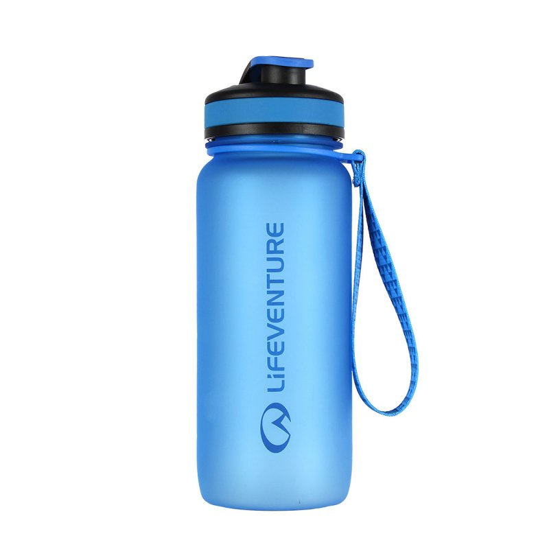

Home
About Us
Bins
Recycle In Your Area
e-Watse
How to Help
Quiz
5 Ways To be More environmental friendly
Carry a reusable shopping bag
Use a reusable coffee cup
Use a reusable water bottle

Carry a reusable cutlery pouch
Switch to eco products